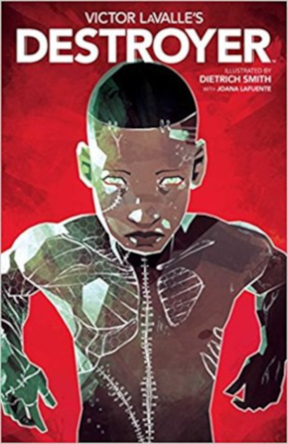

Victor LaValle's Destroyer
Victor LaValle
Calling this brilliant graphic novel a Frankenstein retelling would be an oversimplification. Set in present day America Victor LaValle's Destroyer is a parable that covers race and policing in America, the boundary between scientific progress and morality, and the lengths a person will go when they have nothing left to lose. The story starts when Frankenstein’s monster makes his way from the Arctic to the U.S. mainland leaving dead bodies in his wake. No longer concerning himself with the need for compassion, the creation has become The Destroyer bent on exterminating humanity. Meanwhile, Dr. Josephine Baker, using nanotechnology, has successfully resurrected her 12-year-old son Akai who was killed by a police officer while walking home from a baseball game. Dr. Baker desires nothing more than to destroy a country whose system has long held her to different standards compared to her white peers. A system that ultimately killed her son. With the newly resurrected Akai by her side (despite his reluctance) her chance at vengeance is well within her grasp until they cross paths with Frankenstein’s monster and it becomes a showdown.
In the author’s note, Victor LaValle mentioned that America has seen many technological advancements at an ever-increasing pace, but the pace of honest conversation and actual change moves at a much slower pace. This is a heartbreaking tale of a teenager who became another statistic in a police involved shooting, and a mother driven mad by grief and rage. The story, however, ends on a rather hopeful note when Akai refuses to give in to rage and despair. According to LaValle, Akai embodies the best of what humanity has to offer, and that as long as there’s more kids like him humanity has a chance. The trick is to make sure they are kept alive and well.
{kind=link}